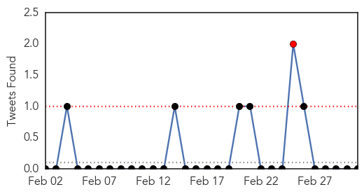
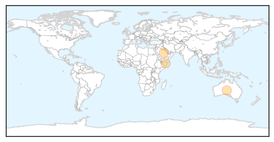
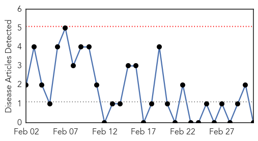

MERS
30-Day Web Trend
18 alerts, 3 warnings

30-Day Twitter Trend
11 alerts, 2 warnings

Article Locations
Article Confidences

Top Articles:
Top Tweets:
- 0.702
- RT: Saudi Arabia: 2014 MERS-CoV Outbreak in Jeddah — A link to health care facilities http://t.co/ilS8ucpHXk
- 0.586
- AFD Blog `Saudi MOH Reports 1 MERS Case' MERS-CoV http://t.co/7c4kqnk4Vh
Pertussis
30-Day Web Trend
0 alerts, 0 warnings

30-Day Twitter Trend
1 alerts, 0 warnings

Article Locations

Article Confidences

Top Articles:
-
No articles found for Mar 03, 2015
Top Tweets:
-
No tweets found for Mar 03, 2015